전기철도산업기사 (2004-08-08 기출문제)
1과목: 전기자기학
1. 균등자계 H 중에 놓여진 투자율 μ 인 자성체를 외부자계 Ho 중에 놓았을 때 자화의 세기는 몇 Wb/m2 인가? (단, 자성체의 감자율은 N 이다.)
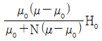
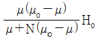
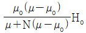
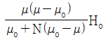
(정답률: 알수없음)

2. 자계의 세기에 관계없이 급격히 자성을 잃는 점을 자기임계온도 또는 큐리점(Curie point)이라고 한다. 순철의 경우 이 온도는 약 몇 ℃ 인가?
- 0
- 370
- 570
- 770
(정답률: 알수없음)
3. 환상 철심에 감은 코일에 5A의 전류를 흘리면 2000AT의 기자력이 생기는 것으로 한다면, 코일의 권수는 얼마로 하여야 하는가?
- 100회
- 200회
- 300회
- 400회
(정답률: 알수없음)
4. 무한장 직선 도체에 전류 Ｉ[A]가 흐르고 있을 때 도체에 서 r[m] 떨어진 점 P 의 자속밀도는 몇 Wb/m2 인가?
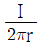
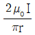
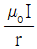
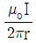
(정답률: 알수없음)
5. 도전률이 연동선의 62%인 알루미늄선의 고유저항은 몇 Ω·m 인가? (단, 표준 연동선의 도전률은 58×106 ℧/m 이다.)
- 2.78×10-8
- 2.93×10-8
- 3.41×10-8
- 3.60×10-8
(정답률: 알수없음)
6. 전기쌍극자로부터 r 만큼 떨어진 점의 전위의 크기 V 는 r 과 어떤 관계에 있는가?
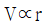
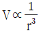
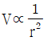
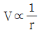
(정답률: 알수없음)
7. 그림과 같이 진공 중에 서로 평행인 무한 길이 두 직선도선 A, B가 d[m]떨어져 있다. A, B의 선전하 밀도를 각각 λ1[C/m], λ2[C/m]라 할 때, A로부터 d/3 [m]인 점의 전계의 세기가 0 이었다면 λ1과 λ2 의 관계는?
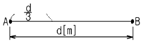
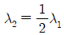
- λ2 = 2λ1
- λ2 = 3λ1
- λ2 = 9λ1
(정답률: 알수없음)
8. 합성수지의 절연체에 5×103 V/m의 전계를 가했을 때, 이때의 전속밀도를 구하면 약 몇 C/m2 이 되는가? (단, 이 절연체의 비유전률은 10 으로 한다.)
- 1.1×10-4
- 2.2×10-5
- 3.3×10-6
- 4.4×10-7
(정답률: 알수없음)
9. 접지 구도체와 점전하간에는 어떤 힘이 작용하는가?
- 항상 0 이다.
- 조건적 반발력 또는 흡인력이다.
- 항상 반발력이다.
- 항상 흡인력이다.
(정답률: 알수없음)
10. 반지름 a[m]의 도체구와 내외 반지름이 각각 b[m] 및 c[m]인 도체구가 동심으로 되어 있다. 두 도체구 사이에 비유전률 εs인 유전체를 채웠을 경우의 정전용량은 몇 F 인가?
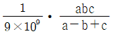
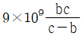
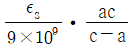
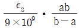
(정답률: 알수없음)
11. 반지름 a 인 원주 도체의 단위길이당 내부 인덕턴스는 몇 H/m 인가?
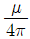
- 4πμ
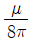
- 8πμ
(정답률: 알수없음)
12. 공기 중에서 접지된 무한 넓이 평면 도체판으로부터 r[m] 떨어진 점에 Q[C]의 점전하를 놓을 때, 이 점전하에 작용하는 힘(引力)의 크기는 몇 N 인가?
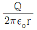
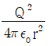
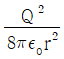
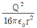
(정답률: 알수없음)
13. 길이 50cm, 반지름 1cm의 원형 단면적을 가진 가늘고 긴 공심 원통 솔레노이드가 있다. 자기 인덕턴스를 10mH로 하기 위한 권회수는 약 몇 회인가?
- 2.55×103
- 3.55×103
- 2.55×104
- 3.55×104
(정답률: 알수없음)
14. 어느 코일의 전류가 0.04초사이에 4A 변화하여 기전력 2.5V를 유기하였다고 하면 이 회로의 자기인덕턴스는 몇 mH 인가?
- 25
- 42
- 58
- 62
(정답률: 알수없음)
15. 전계
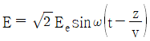
[V/m]의 평면 전자파가 있다. 진공 중에서의 자계의 실효값은 몇 A/m 인가?- 2.65×10-1 Ee
- 2.65×10-2 Ee
- 2.65×10-3 Ee
- 2.65×10-4 Ee
(정답률: 알수없음)
16. 전자계에 대한 맥스웰의 기본 이론이 아닌 것은?
- 자계의 시간적 변화에 따라 전계의 회전이 생긴다.
- 전도전류는 자계를 발생시키나, 변위전류는 자계를 발생시키지 않는다.
- 자극은 N, S극이 항상 공존한다.
- 전하에서는 전속선이 발산된다.
(정답률: 알수없음)
17. 유전체내의 정전 에너지식으로 옳지 않은 것은?
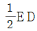
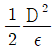
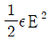
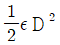
(정답률: 알수없음)
18. 반지름 a 인 액체 상태의 원통상 도선 내부에 균일하게 전류가 흐를 때 도체 내부에 자장이 생겨 로렌츠의 힘으로 전류가 원통 중심방향으로 수축하려는 효과는?
- 펠티에 효과
- 톰슨효과
- 핀치효과
- 제에벡효과
(정답률: 알수없음)
19. 반지름 r[m], 권수 N회의 원형코일이 자속밀도 B[T]의 균일한 자계 중을 중심축이 자계와 직교하도록 하고 매분 n회전할 때 코일에 발생하는 전압의 진폭은 몇 V 인가?
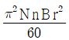
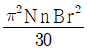
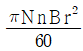
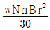
(정답률: 알수없음)
20. 전기력선 밀도를 이용하여 주로 대칭 정전계의 세기를 구하기 위하여 이용되는 법칙은?
- 패러데이의 법칙
- 가우스의 법칙
- 쿨롱의 법칙
- 톰슨의 법칙
(정답률: 알수없음)
2과목: 전력공학
21. 250mm 현수애자 1개의 건조섬락전압은 약 몇 kV 정도인가?
- 50
- 60
- 80
- 100
(정답률: 알수없음)
22. 전류차동계전기는 무엇에 의하여 동작하는지 이에 대한 설명으로 가장 적당한 것은?
- 정상전류와 영상전류의 차로 동작한다.
- 양쪽 전류의 차로 동작한다.
- 전압과 전류의 배수의 차로 동작한다.
- 정상전류와 역상전류의 차로 동작한다.
(정답률: 알수없음)
23. 그림과 같이 폭 B[m]인 수로를 막고 있는 구형 수문에 작용하는 전 압력은 몇 kg 인가? (단, 물의 단위 체적당의 무게를 W[kg/m3]이라 한다.)
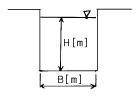
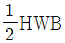
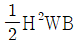
- H2WB
- HWB
(정답률: 알수없음)
24. 평형 3상 송전선에서 보통의 운전상태인 경우 중성점 전위는 항상 얼마인가?
- 0
- 1
- 송전전압과 같다.
- ∞(무한대)
(정답률: 알수없음)
25. 출력 30000kW의 화력발전소에서 6000kcal/kg의 석탄을 매시간당 15톤의 비율로 사용하고 있다. 이 발전소의 종합 효율은 약 몇 % 인가?
- 28.7
- 31.6
- 33.7
- 36.6
(정답률: 알수없음)
26. 송전계통의 중성점접지방식에서 유효접지라 하는 것은?
- 소호리액타접지방식
- 1선 접지시에 건전상의 전압이 상규대지전압의 1.3배 이하로 중성점 임피던스를 억제시키는 중성점접지
- 중성점에 고저항을 접지시켜 1선지락시에 이상전압의 상승을 억제시키는 중성점접지
- 송전선로에 사용되는 변압기의 중성점을 값이 적은 리액턴스로 접지시키는 방식
(정답률: 알수없음)
27. 62000kW의 전력을 60㎞ 떨어진 지점에 송전하려면 전압은 약 몇 kV로 하면 좋은가?
- 66
- 110
- 140
- 154
(정답률: 알수없음)
28. 소호환(arcing ring)의 설치 목적은?
- 애자연의 보호
- 클램프의 보호
- 이상전압 발생의 방지
- 코로나손의 방지
(정답률: 알수없음)
29. SF6 가스차단기의 설명이 잘못된 것은?
- SF6가스는 절연내력이 공기의 2∼3배이고 소호능력이 공기의 100∼200배이다.
- 밀폐구조이므로 소음이 없다.
- 근거리 고장 등 가혹한 재기전압에 대해서 우수하다.
- 아크에 의해 SF6 가스는 분해되어 유독가스를 발생시킨다.
(정답률: 알수없음)
30. 부하율이란?
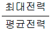
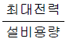
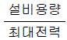
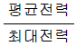
(정답률: 알수없음)
31. 3kV 배전선로의 전압을 6kV로 승압하여 동일한 손실률로 송전할 때, 송전전력은 승압전의 몇 배가 되는가?
- √2
- √3
- 2
- 4
(정답률: 알수없음)
32. 전력계통의 안정도 향상대책이라 볼 수 없는 것은?
- 직렬콘덴서 설치
- 병렬콘덴서 설치
- 중간개폐소 설치
- 고속차단, 재폐로방식 채용
(정답률: 알수없음)
33. 송배전 선로의 도중에 직렬로 삽입하여 선로의 유도성 리액턴스를 보상함으로서 선로정수 그 자체를 변화시켜서 선로의 전압강하를 감소시키는 직렬콘덴서방식의 특성에 대한 설명으로 옳은 것은?
- 최대 송전전력이 감소하고 정태 안정도가 감소된다.
- 부하의 변동에 따른 수전단의 전압변동률은 증대된다.
- 장거리 선로의 유도 리액턴스를 보상하고 전압강하를 감소시킨다.
- 송·수 양단의 전달 임피던스가 증가하고 안정 극한전력이 감소한다.
(정답률: 알수없음)
34. 피뢰기가 구비해야 할 조건 중 잘못 설명된 것은?
- 충격 방전개시 전압이 낮을 것
- 상용주파수 방전개시 전압이 높을 것
- 방전내량이 크면서 제한전압이 높을 것
- 속류 차단 능력이 충분할 것
(정답률: 알수없음)
35. 경간 200m인 가공 전선로에서 사용되는 전선의 길이는 경간보다 몇 m 더 길게 하면 되는가? (단, 사용 전선의 1m당 무게는 2kg, 인장하중은 4000kg, 전선의 안전률은 2 이고, 풍압하중 등은 무시한다.)
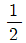
- √2
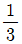
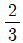
(정답률: 알수없음)
36. 역률 80%인 10000kVA의 부하를 갖는 변전소에 2000kVA의 콘덴서를 설치해서 역률을 개선하면 변압기에 걸리는 부하는 약 몇 kW 인가?
- 8000
- 8540
- 8940
- 9440
(정답률: 알수없음)
37. 농축 우라늄을 제조하는 방법이 아닌 것은?
- 물질 확산법
- 열 확산법
- 기체 확산법
- 이온법
(정답률: 알수없음)
38. 선로의 특성임피던스는?
- 선로의 길이가 길어질수록 값이 커진다.
- 선로의 길이가 길어질수록 값이 작아진다.
- 선로의 길이보다는 부하전력에 따라 값이 변한다.
- 선로의 길이에 관계없이 일정하다.
(정답률: 알수없음)
39. 차단기에서 0-1분-CO-3분-CO 인 것의 의미는? (단, O: 차단공작, C: 투입동작, CO: 투입동작에 뒤따라 곧 차단동작)
- 일반 차단기의 표준동작책무
- 자동 재폐로용
- 정격차단용량 50mA 미만의 것
- 무전압시간
(정답률: 알수없음)
40. 일반회로정수가 A, B, C, D 이고 송수전단의 상전압이 각각 ES, ER일 때 수전단 전력원선도의 반지름은?
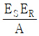
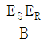
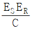
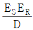
(정답률: 알수없음)
3과목: 전기철도공학
41. 인접 변전소와 상호 계통운전을 원칙으로 하고, 각 변전소별로 전압 위상별, 방면별, 상하선별로 구분하여 급전하는 것은?
- 급전별 분리
- 본선간 분리
- 본선과 측선간 분리
- 차량기지와 본선간 분리
(정답률: 알수없음)
42. 가공 전차선로에서 전차선과 조가선을 자동 장력 조정하는 경우, 전차선 장력의 변화를 표준장력의 몇 % 이내로 시설하는가?
- 5
- 10
- 15
- 20
(정답률: 알수없음)
43. 직류 T-Bar 방식 전차선로에서 익스팬션 죠인트 개소의 T-Bar 상호 간격은 몇 mm 를 표준으로 하는가?
- 100
- 200
- 300
- 400
(정답률: 알수없음)
44. 표준 인장강도가 17 인 경알루미늄선의 피로강도는 몇 ㎏f/mm2 인가?
- 5
- 7
- 12
- 15
(정답률: 알수없음)
45. 교류 전기철도 급전방식에 관한 설명 중 옳지 않은 것은?
- 급전방식은 직접 급전방식, BT 급전방식, AT 급전방식 등이 있다.
- BT 급전방식은 약 4km마다 흡상변압기를 설치한다.
- AT 급전방식은 약 10km마다 스콧트 변압기를 설치한다.
- 직접 급전방식은 회로구성이 간단하여 보수가 용이하고 경제적이지만, 통신 유도장해가 크다.
(정답률: 알수없음)
46. 전차선의 선팽창계수가 1.7×10-5, 최고 온도가 90도, 최저 온도가 40도이며, 전차선의 신장 길이가 800mm라 할 때, 활차식 자동장력 조정장치에서 장력추 취부용 지지대의 간격에 따라 허용되는 전차선의 길이로 가장 적당한 것은?
- 850m
- 950m
- 1⑤0m
- 1150m
(정답률: 알수없음)
47. 경간이 50m이고 장력이 1500kg이며, 선의 단위 길이당 무게가 1.511 kg/m인 전선의 이도는 약 몇 m 인가?
- 0.157
- 0.315
- 2.51
- 3.02
(정답률: 알수없음)
48. 전차선로 계통의 보호방식이 아닌 것은?
- 보호선(PW)에 의한 방식
- 가공지선(GW)에 의한 방식
- 매설지선에 의한 방식
- 피뢰기에 의한 방식
(정답률: 알수없음)
49. 가동 브라켓 구간(A) 및 고정 빔 구간(B)의 가고는?
- A: 960mm, B: 710mm
- A: 900mm, B: 600mm
- A: 690mm, B: 710mm
- A: 960mm, B: 590mm
(정답률: 알수없음)
50.
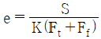
[mm/N]의 식이 나타내는 것은? (단, S는 전주 경간[m], Ft는 조가선의 장력[kN], Ff는 전차선의 장력[kN], K는 상수이다.)- 이선률
- 탄성률
- 비균일률
- 반사계수
(정답률: 알수없음)
51. 더블 이어로 전차선을 접속할 때 더블 이어의 접속 간격은 몇 mm 가 가장 적정한가?
- 200
- 250
- 300
- 400
(정답률: 알수없음)
52. 급전 분기선을 시설하기 위하여 설비된 것을 총칭하여 급전분기장치라고 한다. 다음 중 급전분기장치의 종류가 아닌 것은?
- 암식
- 스팬선식
- 빔식
- 브래키트식
(정답률: 알수없음)
53. 전기방식에 의한 전기철도의 분류방식이 아닌 것은?
- 정류방식
- 직류방식
- 단상교류방식
- 3상 교류방식
(정답률: 알수없음)
54. 수도권 지하구간에 주로 설치된 전차선의 가선방식은?
- 제3궤조식
- 강체식
- 가공 단선식
- 가공 복선식
(정답률: 알수없음)
55. 직류 전기철도에서 레일을 귀로로 이용하므로서 생기는 전식을 방지하는 방법으로 적절하지 못한 것은?
- 레일도상의 배수를 잘 해 주어야 한다.
- 절연성이 높은 침목을 사용한다.
- 변전소 간격을 줄여 준다.
- 레일 전위의 절대값을 높여 준다.
(정답률: 알수없음)
56. 우리나라의 직류 1500V 급전방식에서의 전차선 전압은 전기차 부하의 변동이 극심한 특성을 감안하여 단시간 전압으로 최저 몇 V 이상이어야 하는가?
- 900
- 1000
- 1200
- 1300
(정답률: 알수없음)
57. 3상 교류전압을 2상 교류전압으로 변압하기 위한 결선방식은?
- Y-△ 결선
- Y-Y 결선
- △-Y 결선
- 스코트 결선
(정답률: 알수없음)
58. 터널, 과선교 등에서의 레일면상 급전선의 높이는 몇 m 이상이어야 하는가?
- 3
- 3.5
- 4
- 4.5
(정답률: 알수없음)
59. 교류 전기철도의 변전소를 구성하는 설비가 아닌 것은?
- 3상-2상 변환 변압기
- 급전용 차단기
- 진상콘덴서
- 정류기용 변압기
(정답률: 알수없음)
60. 직류 전기철도 급전방식의 변전 계통과 관계가 먼 것은?
- 전철변전소
- 급전구분소
- 급전타이포스트
- 병렬급전소
(정답률: 알수없음)
4과목: 전기철도구조물공학
61. 그림에서 힘 P1, P2 의 합력은 몇 t 인가?
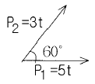
- 7
- 9
- 11
- 13
(정답률: 알수없음)
62. 우리나라의 전차선로를 설계할 때 적용하는 최고온도는 몇 ℃ 인가?
- 10
- 20
- 30
- 40
(정답률: 알수없음)
63. 단면 1차 모멘트와 같은 차원을 가지는 것은?
- 단면 상승모멘트
- 단면계수
- 단면 2차 모멘트
- 회전반지름
(정답률: 알수없음)
64. 직접 지선을 시설하기가 불가능한 경우 별도로 적당한 위치에 전용의 지선주를 세워서 가선하는 지선은?
- 수평지선
- 궁형지선
- V형지선
- 2단지선
(정답률: 알수없음)
65. 좌굴과 휨에 대하여 유리한 단면으로 플랜지 두께가 일정하며, 가공성도 용이한 형강은?
- ㄴ형강
- Ｉ형강
- ㄷ형강
- H형강
(정답률: 알수없음)
66. 직류 1500V 강체방식에서 AL T-Bar 지지용 254mm 애자는 몇 개를 사용하는가?
- 1
- 2
- 3
- 4
(정답률: 알수없음)
67. 작업원의 중량은 응력계산에서 어떤 하중으로 하는가?
- 수평집중하중
- 수평분포하중
- 수직편심하중
- 수직분포하중
(정답률: 알수없음)
68. 전주 기초의 터파기를 할 때 흙막이 틀을 사용하는 여부에 따라 토양과 기초재의 접촉면에서 발생하는 강도의 차를 보정하여 주는 계수는?
- 지형계수
- 강도계수
- 안전율
- 형상계수
(정답률: 알수없음)
69. 편위가 200mm인 지상부 전차선의 수평장력은 약 몇 kgf인가? (단, 전주 경간은 20m, 전차선의 장력은 1000kgf이다.)
- 10
- 20
- 30
- 40
(정답률: 알수없음)
70. 전기철도에서 구조물 계산시 단독 지지주로 취급하지 않는 것은?
- 고정브래킷 지지주
- 하수강 지지주
- 크로스빔 지지주
- 스팬선빔 지지주
(정답률: 알수없음)
71. 건식 게이지가 3.1m이고 전주 지름이 400mm일 때 전차선의 기울기를 150mm로 하면 최소 브래킷 게이지 M은 몇 mm 인가?
- 2550
- 2650
- 2750
- 2850
(정답률: 알수없음)
72. 하중이 크게 가해지는 전주 기초에 적용되는 우물통형기초가 주로 사용되는 것은?
- 강관주
- 목주
- 콘크리트주
- 철주
(정답률: 알수없음)
73. 다음의 1차원 구조물 중 뼈대구조에 해당되는 것은?
- 트러스(truss)
- 보(beam)
- 봉(rod)
- 기둥(column)
(정답률: 알수없음)
74. 전선 중에서 단도체인 경우의 풍력계수는 얼마인가?
- 0
- 1
- 1.5
- 2
(정답률: 알수없음)
75. 전철주로 이용되는 철주에 대한 설명으로 틀린 것은?
- 소요 강도는 자유롭게 설계가 가능하다.
- 내구성이 비교적 높다.
- 전주의 길이에 제약이 없다.
- 전주의 형상이 일정하고 공장제작 및 품질관리가 용이하다.
(정답률: 알수없음)
76. 가공 전차선로에 사용하는 가동브래킷의 기본형이 아닌 것은?
- F형
- I형
- 0형
- Z형
(정답률: 알수없음)
77. 폴리머 애자의 장점이 아닌 것은?
- 충격강도가 크다.
- 운반 및 설치가 용이하다.
- 내트래킹성(Anti-tracking)이 크다
- 기계적 강도가 크다.
(정답률: 알수없음)
78. 전철주와 가동브래킷간의 절연을 위해 사용되는 애자로 적당한 것은?
- 핀애자
- 장간애자
- 현수애자
- 지지애자
(정답률: 알수없음)
79. 전차선로용 V형 지선으로 심플 커티너리 2톤(ton)용에 가장 많이 사용하는 지선의 규격은?
- 65mm2
- 90mm2
- 135mm2
- 강봉 ø10
(정답률: 알수없음)
80. 그림과 같은 전철설비 표준 도기호가 의미하는 것은?
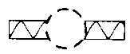
- 스팬선빔
- 수평지선
- 가동브래킷
- 인류용 완철
(정답률: 알수없음)
정답은 "" 이다.